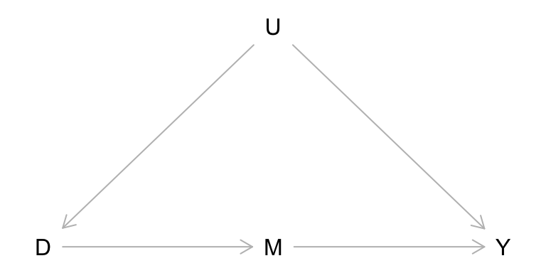
Front Door and Sensitivity Analysis
Ozan Aksoy
March 10, 2026
Outline
Front-door criterion: identification through mechanisms
Sensitivity: what to do with untestable assumptions?
Assessment feedback
- \(E[Y^T(D=C)]\) often estimable in RCT–also pay attention some POs can be observed (and estimable) under SUTVA!
- Define concepts when asked (e.g. basis set)
- Try to use equations we discussed in class as much as possible (e.g. \(\delta_{naive}=\delta+selectionbias+differentialTEbias\)) or precise language
- Study the exercises! (e.g. tests of the basis set)
- In your own DAG: justify missing arrows too, provide a formal analysis of your own DAG
- Interpretation, interpretation, interpretation!
Final mechanism for causal ID: front door
Causes of effects vs effects of causes
We have learned how to identify \(X \rightarrow Y\)
- Experiments (randomise \(X\))
- Selection on observables (satisfy backdoor criterion via excessive control–regression, matching, weighting, Double Machine Learning)
- Difference-in-differences
- Natural experiments (Instrumental variables, regression discontinuity, synthetic control)
Those mostly identify effects of causes
Analytical sociology is about mechanisms \(\approx\) causes of effects
- How do causal effects come about, through which mechanisms
- Macro-micro-macro aggegation (Headstrom 2005)
- Agent-based modelling and causal inference (Manzo 2022)
- Formal theoretical modelling (Coleman 1994)
- Qualitative process tracing (Varese 2024)
Front-door criterion: where mechanisms meet causal identification
Model 1:
Can you identify \(M \rightarrow Y\)?
How about \(D \rightarrow M\)?
How about \(D \rightarrow Y\)?
Model 2:

How about \(D \rightarrow Y\) now?
Front-door criterion
When \(X\) have an unblocked backdoor path to \(Y\), the causal effect \(X \rightarrow Y\) is still identified by conditioning on a set of observed variables \(\{M\}\) if
Condition 1 (exhaustiveness): The variables in \(\{M\}\) intercepts all directed paths from \(X\) to \(Y\); and
Condition 2 (isolation): (a) No unblocked backdoor-paths connect \(X\) to variables in \(\{M\}\) and (b) all backdoor paths from the variables in \(\{M \}\) on \(Y\) can be blocked by contioning on \(X\)
Front-door criterion is tough
Model 1:
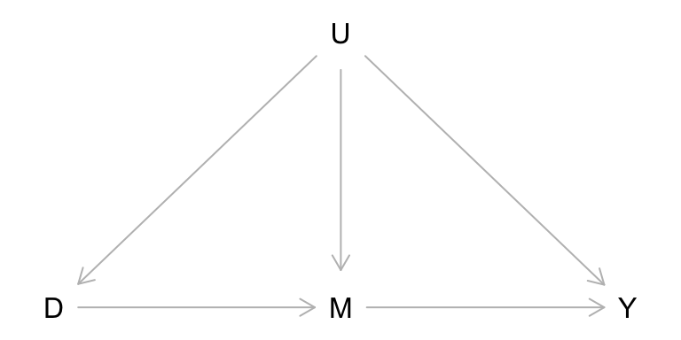
Is the front-door criterion satisfied here?
Model 2:
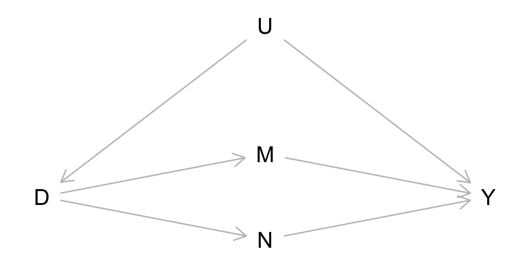
Is the front-door criterion satisfied here if N is unobserved?
If you can find a setup in Sociology where front-door criterion is convincingly satisfied, you have a top paper already!
Course feedback
- Give feedback on the course, help be understand the strengths of the module as well as places to improve
Write / talk to me as well if you have feedback
Sensitivity: what to do with untestable assumptions?
Roadmap
Conceptual clarification
robustness vs sensitivity
Assessing unconfoundedness
Negative outcomes Negative treatments
Quantitative bias analysis
Assumption-free bounds (Manski) Worst-case bounds (Rosenbaum)
R-value (Cinelli and Hazlett)
There is so much more out there!
What is sensitivity analysis?
Credibility revolution: be clear about causal identification and open about the procedure through which results are obtained
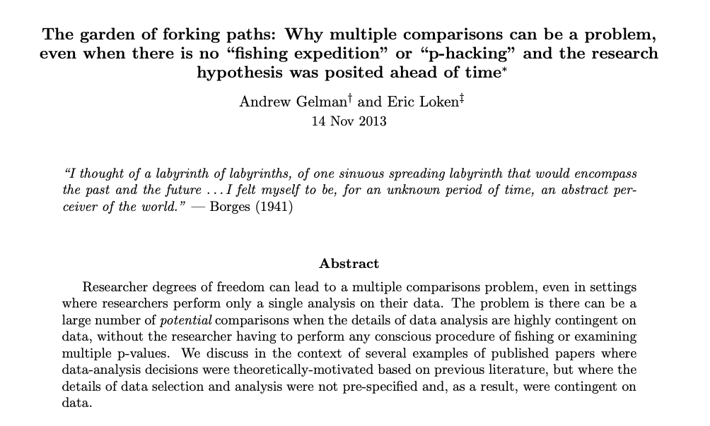
What to do with our assumptions?
During this course, we have seen that causal inference with observational data relies on untestable assumptions. But should we simply take them at face value?
In applied research, it is common to “put to test” one’s approach and see how our results and findings change as a function of our decisions
- Traditionally, a bunch of “robustness checks” relegated to the appendix
Researchers and methodologists are now paying increasing attention to this problem, and bringing it to the forefront.
We need ways to measure the strength of the evidence our studies provide, accounting for the uncertainty in the assumptions we are invoking for our analyses!
Sensitivity vs Robustness
Sensitivity and robustness are frequently used interchangeably, referring to how results would change (sensitivity) or not (robustness) when we make different analytical decisions.
I believe is good to separate two things:
How identification results depend on untestable assumptions about the data generating process
How estimation results depend on analytical or statistical decisions, like data recoding and model specification
To the first, we will call sensitivity, i.e., how our results change as we relax or negate assumptions about potential outcomes or causal relationships
To the second, we will call robustness, i.e., how our results change as we modify the ways in which we analyse the data
Assessing unconfoundedness
Negative outcomes
One possible way to assess if the unconfoundedness assumption holds is to assume we have a negative outcome (\(Y^n\)), similar in confounding structure to the outcome of interest (\(Y\)), but we know the treatment effect for \(Y^n\).
A particular case, commonly invoked, is when we know \(\tau(X \rightarrow Y^n) =0\)
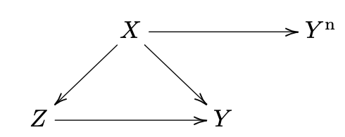
Examples:
Cornfield et al. (1959) using \(Smoking \rightarrow CarAccidents\)
Imbens and Rubin (2015) using \(Exposure \rightarrow Y_{t-1}\)
Jackson et al. (2016) using \(FluVaccine \rightarrow Health_{pre-season}\)
Negative treatments
Another way to assess if the uncounfoundedness assumption holds is to assume we have negative exposure (\(D^n\)), similar in confounding structure to the outcome of interest (\(Y\)), but we know the treatment effect of \(D^n\)
A particular case, commonly invoked, is when we know \(\tau(X \rightarrow Z^n) = 0\)
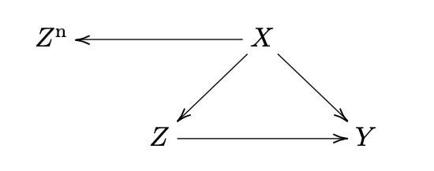
Examples:
- Sanderson et al. (2017) using \(PaternalExposure \rightarrow Newborn < MaternalExposure \rightarrow Newborn\)
What have you notice?
All of these examples are highly non-trivial!
Applying these strategies require knowledge about the causal process (and causal graph), that we may not have.
Quantitative bias analysis
Sensitivity Analysis (QBA)
A different approach is to, instead of trying to find a (lateral) “test” for our assumptions, simulate violations of such assumptions to a certain degree.
Obtaining a (range of) “bias-corrected” estimates gives us an idea of how fragile our inferences are.
Similar to the case with negative outcomes and negative treatments, we generally require to impose additional auxiliary assumptions for these analyses to work, or at least for being able to provide them with a useful interpretation.
There are two different ways of doing this:
Start with the weakest possible assumptions (or no assumptions at all), and incrementally increase how strict your assumptions are: bounding analysis
Start with the strongest possible assumption (you’re willing to defend), and incrementally relax it until the estimated effect vanishes: sensitivity analysis
Bounding / set identification / partial identification
\[ a + b = 10 \]
What is the value of \(a\)?
What is the possible range of \(a\)?
What is the range of \(a\) if \(0 \leq b \leq 10\)
What is the range of \(a\) if \(5 \leq b \leq 7\)
Assumption-free bounds (Manski)
| \(E[Y^1|.]\) | \(E[Y^0|.]\) | |
|---|---|---|
| \(E[\delta_{naive}]=0.4\) | (assume \(0 \leq Y \leq1\)) | |
| Treatment group | \(E[Y^1|D=1] = 0.7\) | \(E[Y^0|D=1] =??\) |
| Control group | \(E[Y^1|D=0] =??\) | \(E[Y^0|D=0] = 0.3\) |
| \(E[\delta_{max}]=0.7\) | ||
|---|---|---|
| Treatment | \(E[Y^1|D=1] = 0.7\) | \(E[Y^0|D=1] =0\) |
| Control | \(E[Y^1|D=0] =1\) | \(E[Y^0|D=0] = 0.3\) |
| \(E[\delta_{min}]=-0.3\) | ||
|---|---|---|
| Treatment | \(E[Y^1|D=1] = 0.7\) | \(E[Y^0|D=1] =1\) |
| Control | \(E[Y^1|D=0] =0\) | \(E[Y^0|D=0] = 0.3\) |
Assumption free Manski bounds: \(-0.3\leq \delta \leq 0.7\)
Weak assumptions (with \(Pr(T)=0.5\))
Monotone treatment response bounds \(\delta_i\geq 0\)
\(\delta_{min} = 0.5(0.7-\color{red}{0.7})+0.5(\color{red}{0.3}-0.3)=0\)
\(0\leq \delta \leq 0.7\)
Monotone treatment selection bounds (treated always have larger POs than control)
\(\delta_{max} = 0.5(0.7-\color{red}{0.3})+0.5(\color{red}{0.7}-0.3)=0.4\)
\(-0.3\leq \delta \leq 0.4\)
Monotone treatment response and selection:
\(0\leq \delta \leq 0.4\)
Worst-case bound (Rosenbaum)
For matching, Rosenbaum (2002) proposed bounds based on a single sensitivity parameter: \(\Gamma \geq 1\) measuring departures from unconfoundedness (what Rosenbaum calls “hidden bias”)
Under unconfoundedness, two observationally equivalent units with \(X_i=X_j\) have the same propensity score. Now, let’s assume a binary unobserved confounder \(U\) affecting their odds of being treated
\[ \frac{1}{\Gamma} \leq \frac{\pi_i}{(1-\pi_i)}\frac{(1-\pi_j)}{\pi_j} \leq \Gamma \]
For example: \(\Gamma = 2\) means that the \(i\) unit has twice the odds of being treated unit \(j\).
Rosenbaum bounds assume an infinite effect on the outcome (that is treatment assignment happens (within the bounds of \(\Gamma\)) so as to maximise observed treatment effect), but that can be relaxed (two parameters version with \(\Gamma\) and \(\Lambda\))
Example: Unemployment benefits and job search outcomes
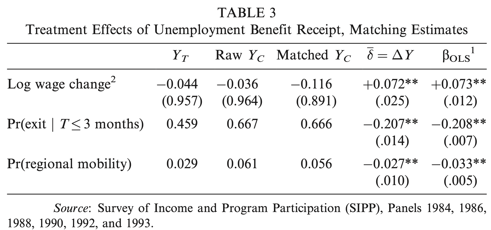
(DiPetre and Gangl 2004)
Example: Rosenbaum bounds
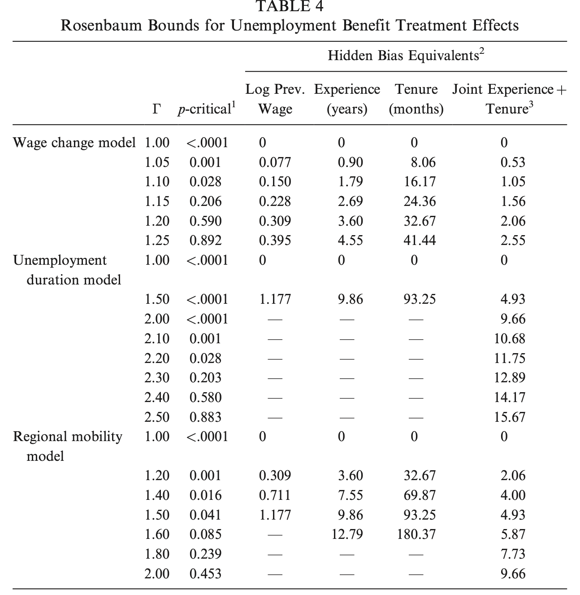
The OBV formula
Regression
\[\color{grey}{Y_i = \zeta + \color{red}{\tilde{\beta}} X_i + u_i}\]
\[ \tilde{\beta} = \frac{\text{Cov}(X_i , Y_i)}{\text{Var}(X_i)} \]
\[ = \frac{\text{Cov}(X_i, \alpha + \beta X_i + \gamma W_i + \epsilon_i)}{\text{Var}(X_i)} \]
\[ = \color{blue}{\beta} + \underbrace{\color{red}{\gamma}}_{\text{Impact}} \times \underbrace{\color{green}{\delta}}_{\text{Imbalance}} \]
Path diagram
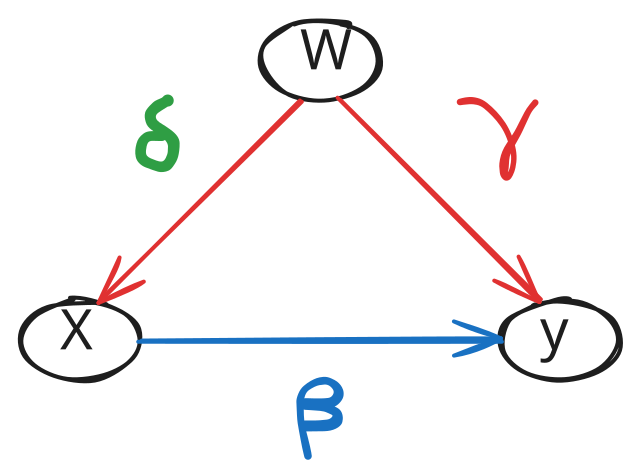
R(obustness)-value (Cinelli and Hazlett)
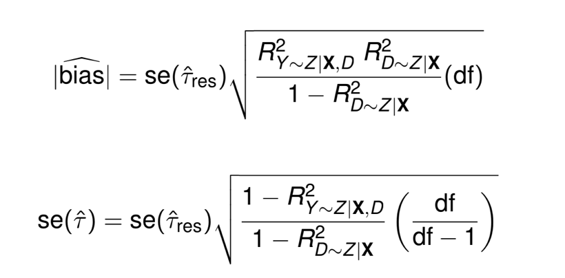
- RV: What percentage of the residual variance in \(Y\) and \(D\) would need to be explained by the omitted variable to nullify the effect?
R(obustness)-value (Cinelli and Hazlett)
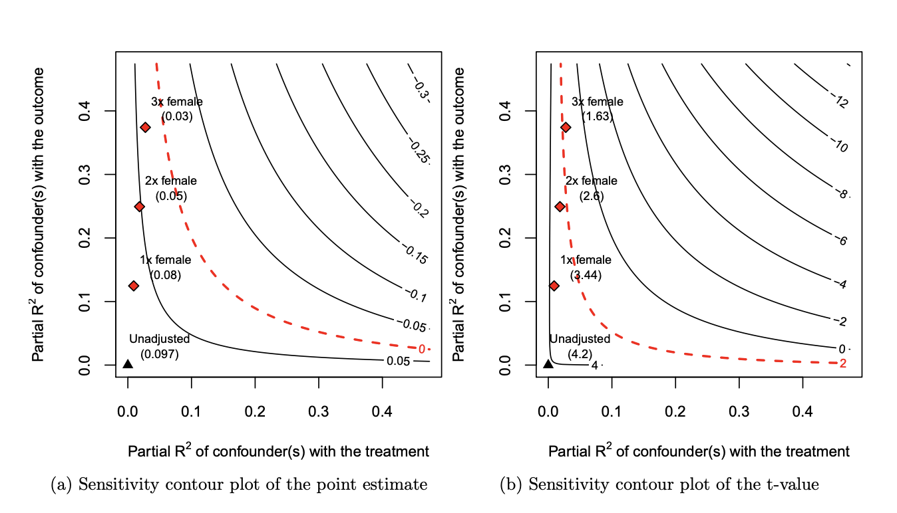
(Exposure to violence \(\rightarrow\) peace attitudes)
Extreme-value analysis
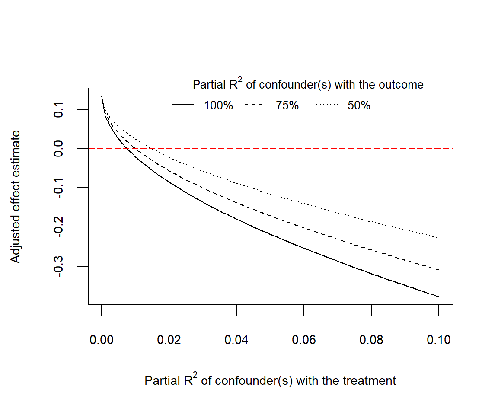
Imagine \(U\) explains 100%, 75%, 50%, of the residual variation in outcome; how strongly U needs to be related to treatment to nullify the estimated effect?
It was a joy!

Sensitivity analysis